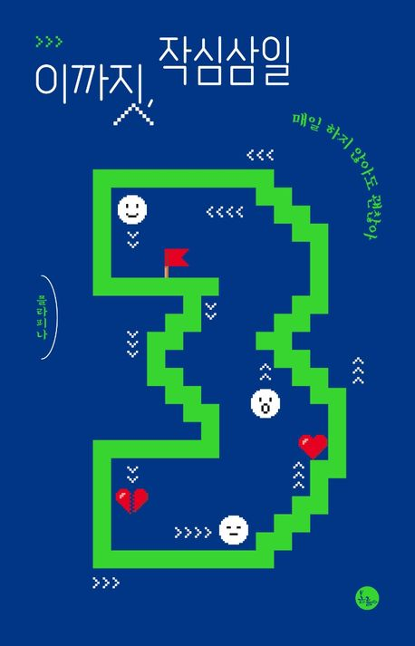

고민되는 문제가 있을 때 하상 주변과 상담하라는 'Always Consult Before Deciding(ABCD)'이 좋은 이유는, 고민되는문제를 이해하는 것이 중요하기 때문입니다. 문제를 이해했다는 인식도 사실은 혼자만의 망상인 경우가 많습니다. ABCD로 다른 사람에게 문제를 이해시키는 과정에서 그것이 드러납니다. - p.35
뽀모도로란? 25분 일하고 5분 쉬는 것을 네 번 반복하는 시간관리 기법을 말한다. 일하는 25분 동안은 집중해야 하며, 집중에 방해되는 기타 모든 행동들이 금지된다. 이 기법을 적용하려면 스마트폰 앱이나 타이머는 필수다. - p.65
나는 멍청할 수 있지만 뇌는 진짜 똑똑합니다. 예측이 가능해지면 기대치를 금방 조정해서 최적화하는게 뇌이며, 예측을 계속 불가능하게 만들어야 합니다.우리 머리는 알아도 뇌가 아는 거랑은 또 다르니까요. 뇌 한테 "야! 잠 좀 자게 멜라토닌 좀 분비해!"라고 한다고 멜라토닌이 나오는 게 아닌 것처럼요. - p.72
| 저자 | 플라피나 | 옮김 | |
| 출판 | 볼름 | 발행 | 2021.07.19 |